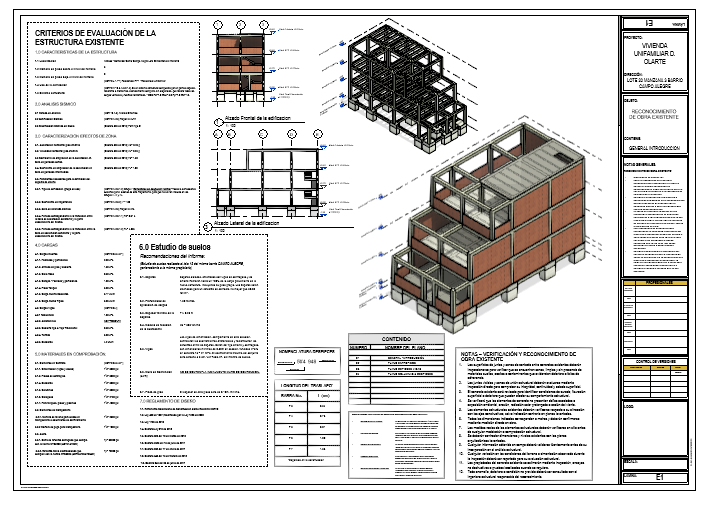

Evaluación y reforzamiento estructural
Casa Díaz Olarte | Evaluación y reforzamiento en zona sísmica alta
Resumen ejecutivo
El proyecto Casa Díaz Olarte corresponde a la evaluación estructural de una vivienda unifamiliar de dos niveles construida mediante un sistema aporticado en concreto reforzado, ubicada en una zona de alta sismicidad en Santander. A partir de un reconocimiento de obra, se identificaron condiciones estructurales existentes, posibles deficiencias y oportunidades de mejora en el comportamiento sísmico del sistema. Con base en este diagnóstico, se plantearon estrategias de reforzamiento orientadas a mejorar la capacidad resistente, la rigidez lateral y la seguridad estructural de la vivienda, garantizando un desempeño más adecuado frente a solicitaciones sísmicas.
Contexto y condiciones del proyecto
- Uso: Vivienda unifamiliar.
- Niveles: 2 pisos.
- Sistema existente: Pórticos en concreto reforzado.
- Ubicación: Zona de alta amenaza sísmica en Santander.
- Alcance: Reconocimiento estructural y propuesta de reforzamiento.
- Objetivo: Mejorar el desempeño sísmico de la edificación existente.
Diagnóstico estructural
A partir del reconocimiento de obra se evaluó la configuración estructural existente, identificando aspectos como distribución de elementos resistentes, continuidad estructural, posibles irregularidades y condiciones de rigidez lateral. El análisis permitió establecer las principales vulnerabilidades del sistema aporticado frente a cargas sísmicas, así como la necesidad de implementar medidas de reforzamiento que mejoraran la respuesta global de la estructura.
Propuesta de reforzamiento
La estrategia de reforzamiento se orientó a incrementar la capacidad resistente y la rigidez del sistema estructural, mediante intervenciones compatibles con la edificación existente. Estas incluyen el refuerzo de elementos estructurales clave, la mejora en la continuidad del sistema resistente y la optimización del comportamiento lateral del conjunto. El enfoque adoptado permitió proponer soluciones técnicamente viables, constructivamente factibles y alineadas con los criterios de la normativa NSR-10 para evaluación y reforzamiento estructural.
Datos técnicos del proyecto
- Nombre: Casa Unifamiliar Díaz Olarte
- Tipo: Vivienda unifamiliar existente
- Niveles: 2
- Sistema estructural: Pórticos en concreto reforzado
- Intervención: Evaluación y reforzamiento estructural
- Condición crítica: Alta amenaza sísmica
- Enfoque: Mejora del desempeño sísmico
- Normativa: NSR-10
Desempeño estructural esperado
Las medidas de reforzamiento propuestas buscan mejorar significativamente el comportamiento estructural de la vivienda frente a eventos sísmicos, incrementando la rigidez lateral, reduciendo desplazamientos y mejorando la distribución de esfuerzos en los elementos estructurales. Este enfoque permite llevar la edificación hacia un nivel de seguridad más adecuado, alineado con los requerimientos actuales de la normativa colombiana.
Entregables
- Informe de reconocimiento estructural
- Diagnóstico del sistema estructural existente
- Modelo analítico de evaluación
- Propuesta de reforzamiento estructural
- Recomendaciones técnicas para intervención en obra